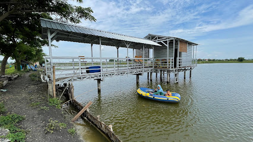

Alun-Alun Gresik terletak di Jl. KH. Wachid Hasyim, Bedilan, Kec. Gresik, Kabupaten Gresik, Jawa Timur 61114

Stadion Gelora Joko Samudro terletak di Jl. Veteran No.160, Gending Wetan, Singosari, Kec. Kebomas, Kabupaten Gresik, Jawa Timur 61123
